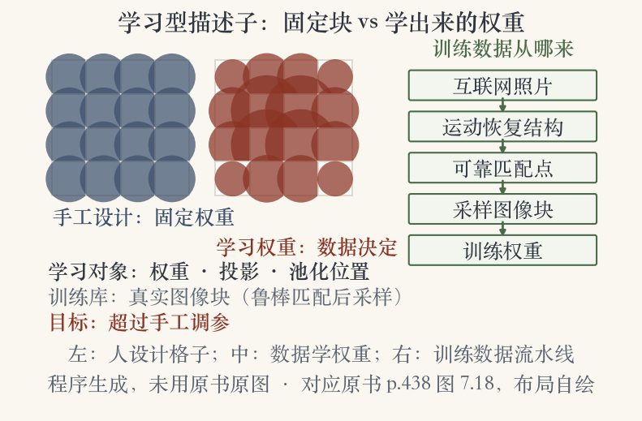
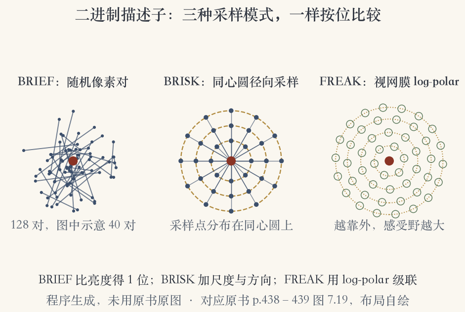
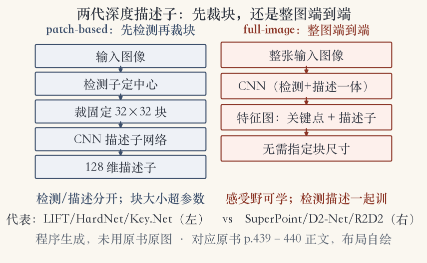

第 7 章 · 描述子学习
参数从数据里学
Winder 与 Brown 把 SIFT 和 GLOH 收进一个框架。
框架允许从数据里学参数。
学出来的描述子超过手工调参版本。
这一集分三大步，展开成五级台阶。
依据：原书第 437–438 页
三大步
学参数
压成比特
交给深度网络
正课第六十三集
01 / 16
描述子学习 · 学什么
学习型描述子学什么
学低维投影，把描述子投到判别力强的空间。
连池化区放在哪里也一起学。
训练数据是互联网照片里可靠匹配的块。
DAISY 用稠密立体匹配真值优化参数。
依据：原书第 438 页
四个要点
投影：降维
池化：位置
数据：真实图像块
DAISY：立体真值
正课第六十三集
02 / 16
描述子学习 · 固定块与学习权重
同一张格子，权重可以学
图 7.18 画的是空间求和块。
块的位置和权重可以从训练库学。
训练块来自互联网照片的可靠匹配。
数据偏了，学出的描述子也会偏。
依据：原书第 438 页

学习型描述子：手工固定权重、数据学权重、训练数据五步｜程序生成，未用教材或论文原图
正课第六十三集
03 / 16
描述子学习 · 通用与专用
通用之外，也能做专用
通用检测子追求跨类别可重复。
类别专用检测子最大化与其他类的判别力。
知道平面朝向，可提视角不变图像块。
专用检测子在自己那一类上更准。
依据：原书第 438 页
两种检测子
通用：跨类别可重复
专用：最大化类间判别力
视角不变：已知平面朝向
正课第六十三集
04 / 16
二进制描述子 · 动机
压成比特：匹配按位算
二进制位串描述子利用 Hamming 距离。
BRIEF 比较 128 对像素亮度。
结果存成 128 位向量，也就是 16 字节。
异或后数 1 的个数，就是差异。
依据：原书第 438 页
BRIEF 三个数
128 对像素
128 位向量
16 字节
正课第六十三集
05 / 16
二进制描述子 · 三种采样
三家都在挑像素对
ORB 给 FAST 加方向，再算 BRIEF。
BRISK 加尺度空间和径向对称采样。
FREAK 用视网膜式 log-polar 采样。
差别在怎么挑、要不要转方向、跨不跨尺度。
依据：原书第 438–439 页
三种二进制
ORB：方向 + BRIEF
BRISK：尺度 + 径向
FREAK：log-polar + 级联
正课第六十三集
06 / 16
二进制描述子 · 采样模式
采样模式决定位的质量
BRIEF：散落的像素对。
BRISK：同心圆上的径向采样。
FREAK：视网膜式 log-polar 采样。
采样前先高斯平滑，免得噪声带偏。
依据：原书第 438–439 页

二进制采样：BRIEF 随机像素对、BRISK 同心圆、FREAK 视网膜 log-polar｜程序生成，未用教材或论文原图
正课第六十三集
07 / 16
深度描述子 · patch 路线
2015 之后，深度网络上场
大多数新描述子用深度学习构造。
LIFT、TFeat、L2-Net、HardNet 都以块为输入。
还需检测子定中心，再裁固定尺寸块。
检测和描述还是分开的。
依据：原书第 439 页
patch 路线
输入：固定尺寸图像块
先检测，再描述
代表：LIFT / HardNet / Key.Net
正课第六十三集
08 / 16
深度描述子 · 整图路线
另一条路：整图端到端
DELF、SuperPoint、D2-Net 直接吃整张图。
感受野可以从数据里学。
不用事先指定图像块多大。
实践中常学出类似高斯的感受野。
依据：原书第 439–440 页
full-image 路线
输入：整张图
检测与描述一起学
代表：SuperPoint / D2-Net / R2D2
正课第六十三集
09 / 16
深度描述子 · 两代路线
两代路线：先裁块还是整图
patch-based：检测子定中心，固定块大小。
full-image：整图进网络，检测描述一起学。
前者更像经典 SIFT 的流程。
后者省掉块尺寸这个超参数。
依据：原书第 439–440 页

两代深度描述子：patch-based 先裁块，full-image 整图端到端｜程序生成，未用教材或论文原图
正课第六十三集
10 / 16
评测 · HPatches
排行榜：换个数据集就换冠军
HPatches 专门评图像块匹配。
Balntas 等人结果：HardNet、L2-Net 平均最好。
另一篇说 CAPS、R2D2 最好。
WISW 认为加强版 SIFT 最好。
依据：原书第 440 页
三份榜单
HPatches：HardNet / L2-Net
另一文：CAPS / R2D2
WISW：加强版 SIFT
正课第六十三集
11 / 16
评测 · 宽基线与昼夜
宽基线：结果强依赖任务
HardNet、Key.Net、D2-Net 名列前茅。
D2-Net 找到的地标点最多。
DoG 检测子仍然是最好的检测子。
跨昼夜大光照差异也有专门研究。
依据：原书第 440 页
两个结论
结果强依赖任务
没有一种描述子通吃
正课第六十三集
12 / 16
趋势 · 无检测子
最新趋势：干脆不要检测子
宽基线匹配开始直接稠密提特征。
提完再匹配，并精化对应关系。
Mishkin 2021 年做过评测。
代价是计算量和几何校验更重。
依据：原书第 440 页
无检测子
稠密提特征
匹配后精化
省掉检测子这一环
正课第六十三集
13 / 16
选型 · 三条路线
怎么选：算力、精度、复杂度
二进制描述子按位匹配，适合端上。
patch 路线要检测子和固定块。
整图路线不用指定块尺寸。
深度描述子适合难场景，算力更贵。
依据：原书第 438–440 页
三条路线
二进制：快、省
patch：好替换
full-image：精度优先
正课第六十三集
14 / 16
复盘 · 五级台阶
五级台阶：人退一步，数据进一步
手工设计描述子。
从数据学参数和池化布局。
压成二进制位串。
深度网络学块描述子，再到整图端到端。
依据：本集主线
五级
手工 → 学参数
→ 二进制
→ 深度 patch
→ full-image / 无检测子
正课第六十三集
15 / 16
小结 · 移交实验课
收束：下一集上机
无检测子稠密提取是最新趋势。
这些技术已经被 Mishkin 评测过。
下一集用 OpenCV 串起检测、描述、匹配。
看看这些名字在代码里长什么样。
依据：原书第 440 页
移交
本集：描述子的学习时代
下一集：OpenCV 特征全流程
正课第六十三集
16 / 16